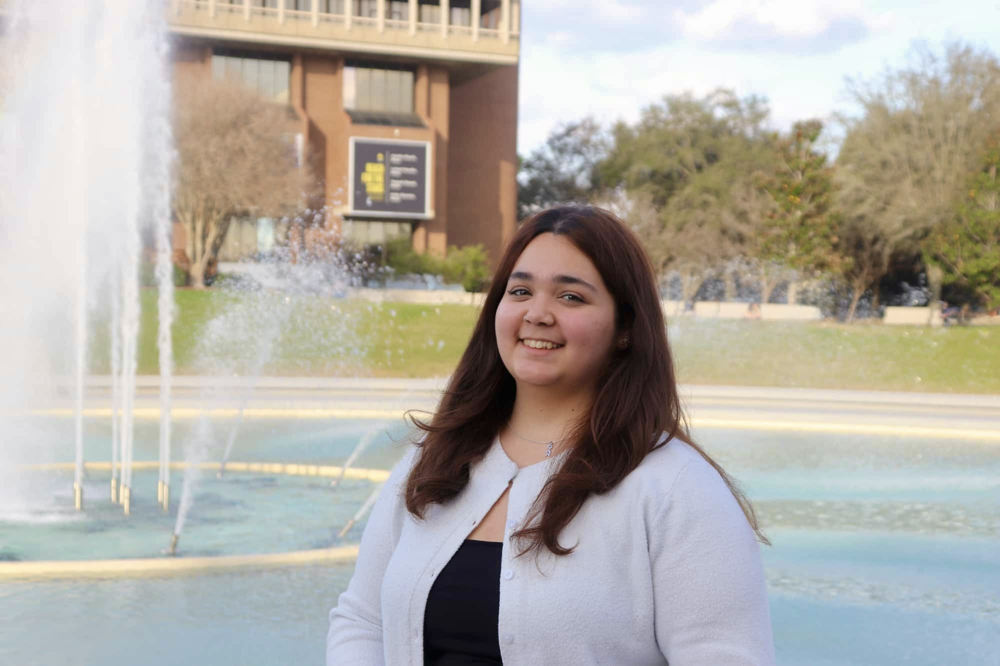

I'm Victoria, a rising senior at the University of Central Florida studying Computer Science with a minor in Digital Media which has given me the tools to learn coding, and want to specialize in web development & design. I'm an incoming Website Design intern with non-profit Starr Wellness Collective (SWC) in the fall, and a previous Website & SEO Intern with Wedding Salon, which has, and will continue to expand my experience with managing existing websites and how to improve them, using digitial marketing & UI/UX design skills.
Overall, I'm passionate about blending creativity with coding and am working towards furthering that into a professional career.
Outside of school my hobbies include reading, photography, exploring new cafes (I'm obsessed with coffee), going to Disney, and playing cozy games like Roblox or Tomodachi Life.